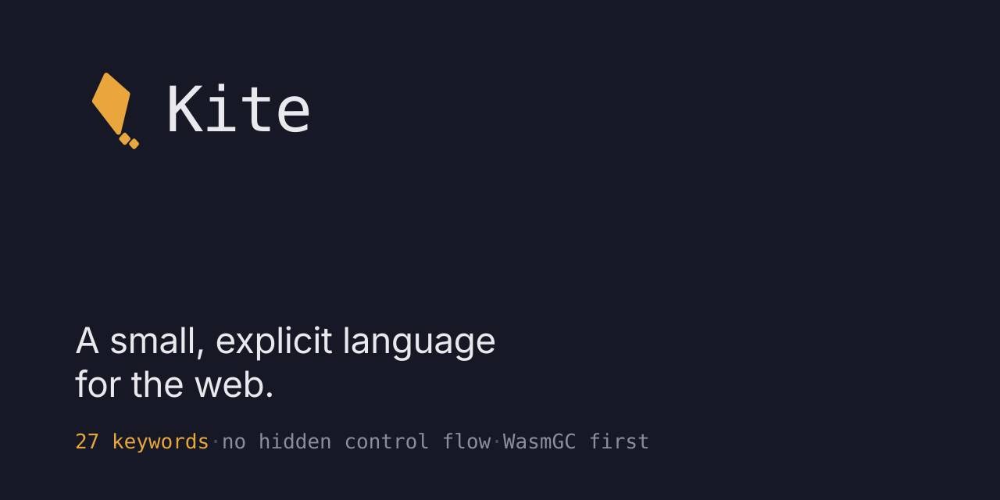

Kite — Flight
Geometry, clear space, colourways and the three places the mark lives.
Everything on this page is drawn from one file — kite-mark.svg
— at different sizes and colours.
The mark
Clear space & minimum size
Geometry
- tilt
- −12° about the sail's centre
- sail
- kite quadrilateral, 40 × 69 on a 100 grid
- corners
- 3-unit round join, uniform
- tail
- 2 diamonds at 55% and 44% of the sail's width
The sail measures 40 units across the widest point and 69 down the spine. The brand sheet writes that width as 20, which is the half-width from the spine to one shoulder; the number above is what the drawing measures.
Colourways
Wordmark & lockups — JetBrains Mono Medium, −2% tracking
Favicon — the tail drops at 24 px and below
favicon.svg is the tailless mark, because a favicon is never
drawn above 32 px and the tail closes up below 24.
Editor extension tile
editors/vscode/icon.svg is the first of these. The Marketplace
wants a 128 px PNG, so it is rasterised at packaging time rather than
committed twice.
Repository social preview — 1280 × 640, shown at half

Documentation site header
It is the one at the top of this page: a 28 px mark, 12 px to the wordmark, 26 px between nav items, and the GitHub button in #9184D9. A code block carries the mark's colour as a 2 px left edge.